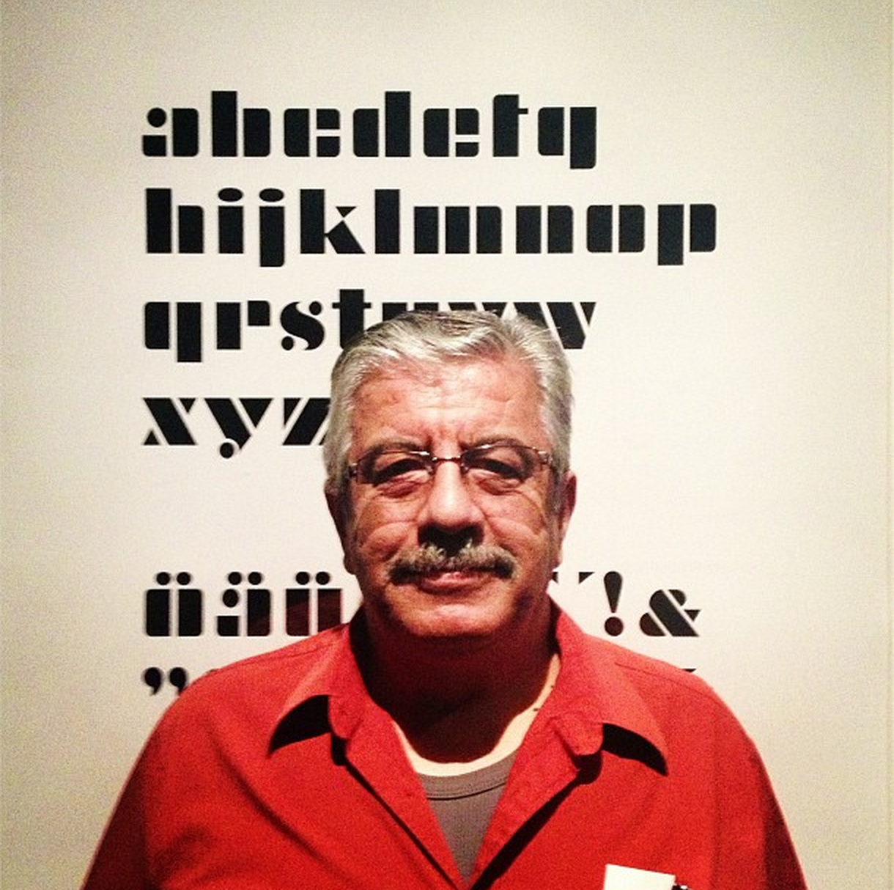

Make art happen with browser eyes and ears.
What I do
What I do Contd.

What I do Contd. Contd.
Meet my dad.
Meet my dad Contd.
Son, you will grow up to be an engineer.
- dad.
I, on the other hand
Fast-forward to 2013

Not a fan of "title"s
- Titles are arbitrary
- Tools are tools and you make what you want with them.
- Artists are specially good at appropriating tools and their contemporary technology for creative expression.
Proof? Old school awesome nerd artists.

Une Esthétique Programmée.

Not super popular 46 years ago.
Nerd art acceptance has come a long way.
And then this man happened to me.

...and to many many others.
Artist creates a space for encounter and inquiry
And digital artist mediates this encounter through zeros and ones.
Teh/YC - reliving recurring dreams I
Teh/YC - reliving recurring dreams II

Teh/YC - reliving recurring dreams III
C++ is awesome, but
What if:
- We didn't have to compile
- The artwork was portable
Enter:
- WebRTC
- Canvas
- JS
- Ghetto Computer Vision
Being web based should not dictate the mode of interaction:
Making it site-specific.